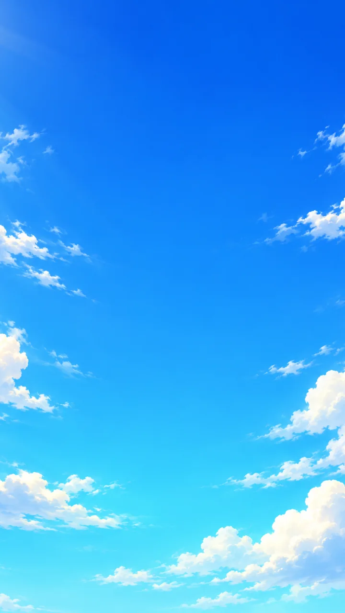
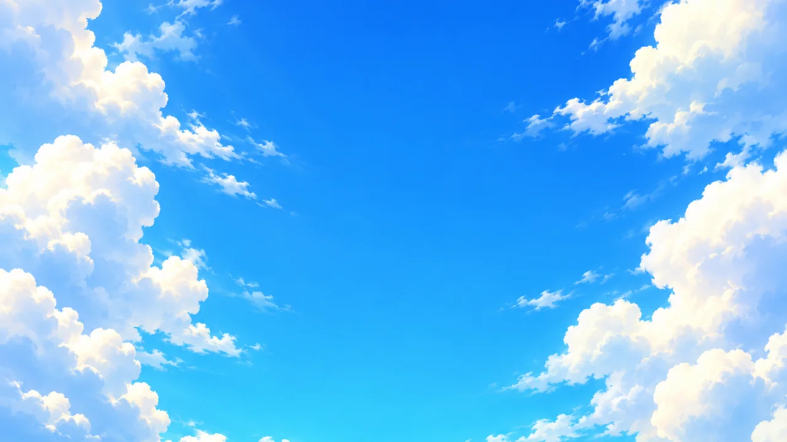
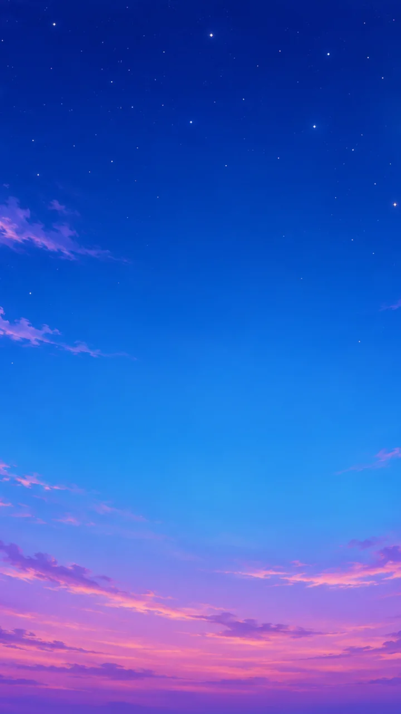
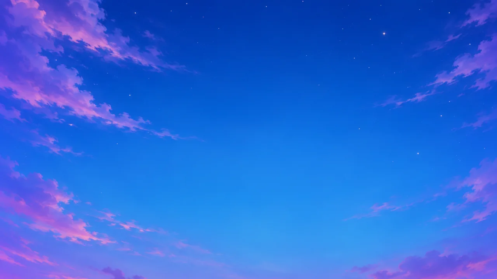
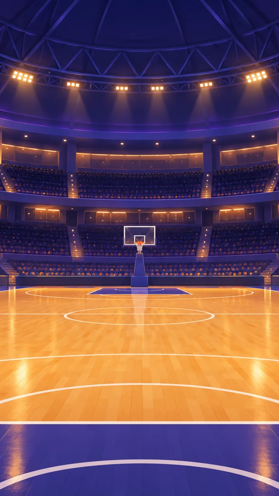
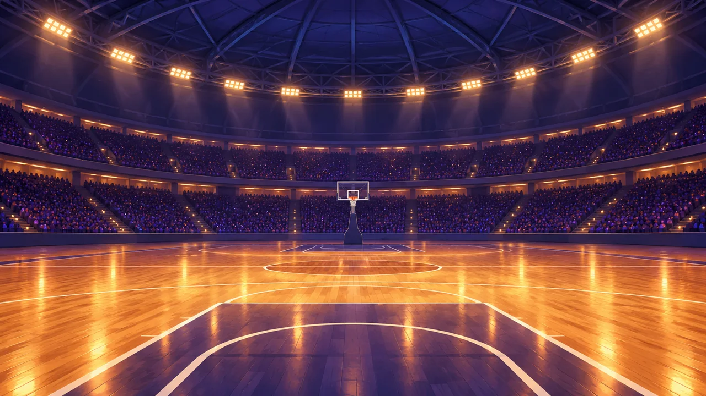
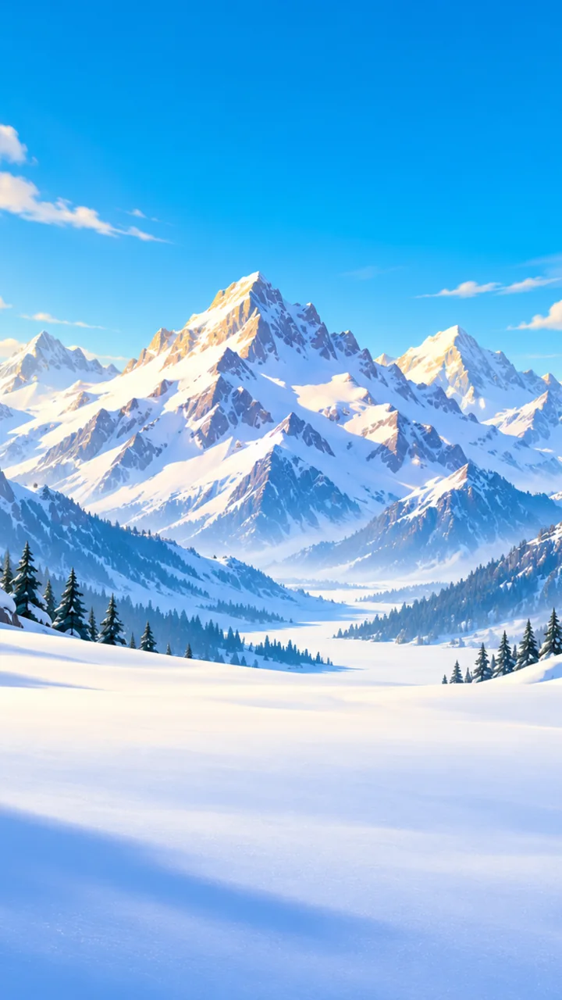
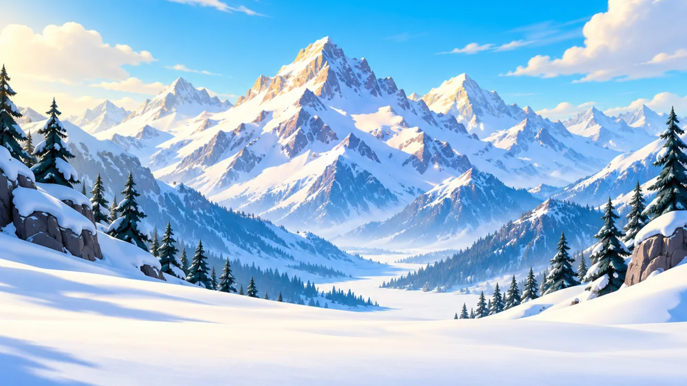

שמיים לאצטדיון · יום


האי שלי · ספריית סביבה · 30.10.2026
שישה מרקמים חוזרים וחמש סצנות בשני כיווני מסך. התמונות מקוריות וללא טקסט או מיתוג; הכותרות כאן שייכות לדף הסקירה.
כל משטח מציג אותו אריח ארבע פעמים, בחזרה של 2×2. לחיצה על שם המרקם פותחת את קובץ ה־WebP בגודל 512×512.
משטח כדורגל; פסים רוחביים
לוחות מייפל ענבריים ללא קווי מגרש
שלג לבן עם אדוות כחולות עדינות
אגרגט כחול־אפור ללא סימוני מגרש
בטון אפור בהיר עם נקבוביות עדינות
נקודות צבע על רקע נייבי, ללא פנים או דגלים
קובצי אורך ביחס 9:16 וקובצי רוחב ביחס 16:9. המסגרות הבאות מדגימות חיתוך מרכזי למסך טלפון ארוך או רחב יותר.







